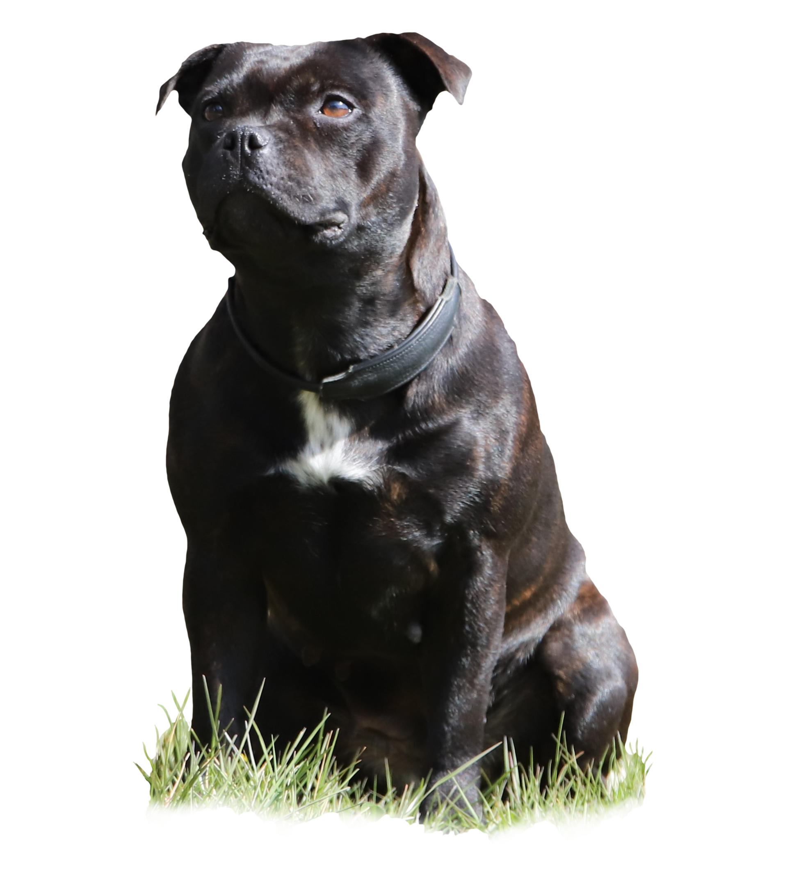

Vores Franske bulldogs
Vores Franske bulldogs
Killian

Ekstra info
Mor
Roosje Beerenbulls
Far
Gold-Sierra Quintino
Frenske
Sundhedsoplysninger
Patella luxation
H/V: Grad 0/0
(09.01.2020)
DKK Registreringsnummer
09320/2019
Er udstillet og avlsgodkendt.
03.11.2019 Herning
EXCELLENT med CK, 2. plads. JR. CERT,
Kritik: 11 mdr. gammel han af udmærket type, maskulint velproportioneret hoved, herligt
bredt,
vel ansatte øre, korrekte øjne, godt næseparti, korrekt underbid, kraftig hals, veludviklet
brystparti med god bredde, velansatte ben, korrekt karpe, god underlinie, herlig brystkasse,
acceptabel vinklet bag. Godt kryds, herlige frie bevægelser, herlig pels og farve. Velvist.
Vores Franske bulldogs
Aya

Mor
Joker Face's Born Bobbi
Bracelet
Far
Joker Face's I`m Ice
Jack
Sundhedsoplysninger
Patella
luxation H/V: Grad 0/0
(21.05.2020)
DKK Registreringsnummer
09552/2019
Er udstillet.
09.02.2020 Fredericia
EXCELLENT
Kritik: 9 mdr. velbygget brindle tæve, velformet hoved, mørke runde øjne, stram
underkæbe, god karpet ryglinje, velvinklet, lette bevægelser som er racetypiske.
Vores Franske bulldogs
Jade

Mor
Szalyomi Elizabeth
Far
King Don Corleone from
Spolbo
Sundhedsoplysninger
Patella
luxation H/V: Grad 0/0
(13.04.2020)
DKK Registreringsnummer
04738/2020
Er ikke udstillet
404
Kommer snart:
Raceoversigt - fransk bulldog

Vores staffordshire bull terrier
Buffy
Mor
Silkstaff’s Live or Let
Die
Far
Charly Brown De La Fuente de Los
Ac
Sundhedsoplysninger
HD: A/A
(06.03.2019)
AD: 0/0 (06.03.2019)
HC: Fri (01.04.2019)
L-2-Hga: Fri (01.04.2019)
DKK Registreringsnummer
14360/2017
Er udstillet.
09.02.2029 Fredericia
EXCELLENT
Feminin tæve I stærk udvikling, middel mørke øjne, ganske godt udtryk, korrekt bid, god
korrekt bredde på skallen, korrekt rosenøre front behøver mere tid, normale ben-stammer,
behøver fylde i lændeparti, skal få mere bestemthed i sine bevægelser, fantastisk humør
404
Kommer snart:
Raceoversigt - staffordshire bull terrier